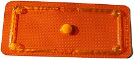

"La pilule"
La pilule doit être prise à heure régulière chaque jour,
même si vous ne prévoyez pas d’avoir des relations sexuelles ce jour-là.
Elle ne protège pas des IST (Infections Sexuellement Transmissibles).
Seul le préservatif vous protège du VIH et de la plupart des IST.

"La pilule du lendemain"
La contraception d'urgence hormonale ou "pilule du lendemain"
doit être prise au plus tard dans les 3 à 5 jours après un rapport sexuel à risque.
Elle est disponible sans prescription médicale et de façon anonyme et gratuite aux mineures.